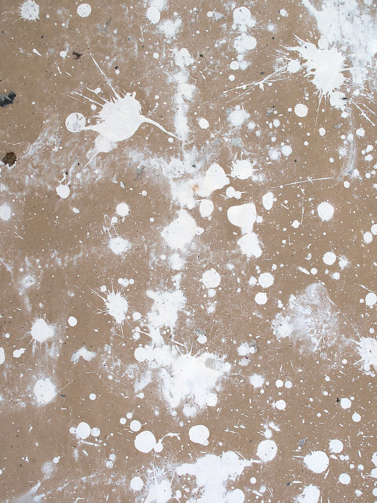

⛏I need to paint the wooden beam brown.
木のビームを茶色に塗る必要がある。
/aɪ ˈniːd tə ˈpeɪnt ðə ˈwʊdn̩ biːm braʊn/
- need の末 /d/ が to の弱形 /ə/ に連結 [ˈniːdə]ニーダ
- paint の末 /t/ が the の首 /ð/ の前で未開放、[ˈpeɪn̚ðə]ペインザに聞こえる
アイ・ニーダ・ペインザ・ウッデン・ビーム・ブラウン

⛏I need to paint the wooden beam brown.
木のビームを茶色に塗る必要がある。
⛏This paint needs more layers to dry.
このペンキはしっかり乾くのにより多くの層が必要です。
⛏Can we paint a huge sign for our village?
私たちの村のための巨大な看板を描けますか？
He is painting the wooden walls of his new house.
彼は新しい家の木製の壁を塗っています。
I'm painting colorful stripes on the wooden roof right now.
今、木製の屋根に色とりどりの筋を塗っています。
Steve was painting the castle when the creeper appeared.
スティーブがクリーパーが現れたときに城を塗っていました。
I was painting the walls when you called my name.
あなたが私の名前を呼んだとき、私は壁を塗っていました。
They had been painting the mansion for hours before the storm arrived.
嵐が来る前に、彼らは数時間館を塗り続けていました。
She had been painting the mural since early morning.
彼女は朝早くからずっと壁画を塗り続けていました。
I have painted all the walls in my house yellow.
私は家の壁をすべて黄色に塗ってしまった。
She has painted the fence three times this year.
彼女は今年フェンスを3回塗った。
By the time the rain came, I had painted the entire roof.
雨が降ってくる時までに、私は屋根全体を塗り終わっていた。
He had painted the castle before we arrived at the village.
彼は私たちが村に到着する前に城を塗り終わっていた。
Steve has been painting the mansion since this morning.
スティーブは今朝からずっと館を塗り続けている。
I have been painting the fence for hours and still have more to do.
私は何時間もフェンスを塗り続けていて、まだ塗ることがある。
I'll paint the walls of my house before sunset.
日が沈む前に、家の壁を塗ります。
They will paint the new structures in bright colors.
彼らは新しい構造を明るい色で塗るでしょう。
I'll be painting the fence tomorrow morning.
明日の朝、フェンスを塗っているでしょう。
We'll be painting the entire mansion by sunset.
日が沈むまでに、館全体を塗り続けているでしょう。
By tomorrow, I will have painted all the wooden blocks.
明日までに、すべての木製ブロックを塗り終わっているでしょう。
He'll have painted the entire mansion before the sunset.
日が沈む前に、彼は館全体を塗り終わっているでしょう。